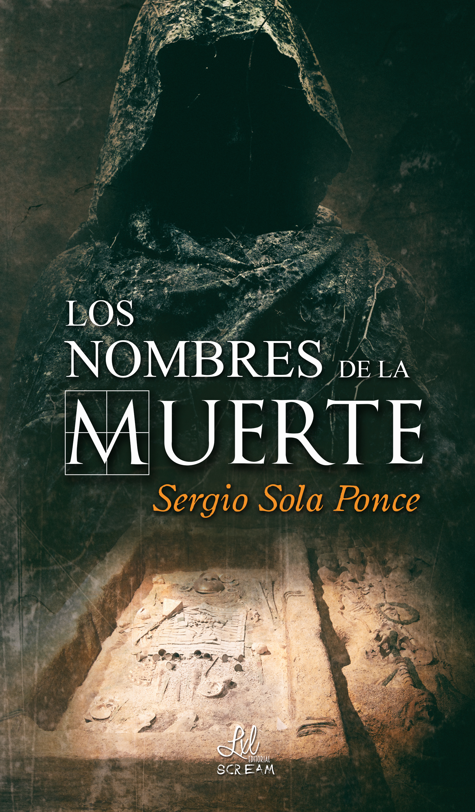

Ley Natural

Sinopsis Ley Natural
¿Qué tienen en común unas muertes inexplicables, un anciano
enfermo de Alzheimer y una
tribu perdida en el Amazonas?
En el año 2015, el ser humano se enfrenta a un monstruo que él mismo ha creado y que está a punto de
destruirle. La aparición de una célula terrorista que pretende destruir la ciudad de Los Ángeles siembra
el caos y la incertidumbre en todo el país. Por otro lado, Jimmy Rogers, un joven universitario,
descubrirá la verdadera forma de ser de las personas y eso le hará plantearse cuestiones morales sobre
la manera de vivir que tenemos. Se verá envuelto en una serie de acontecimientos que harán que cambie su
forma de ver el mundo. Lo que Jimmy desconoce es que quizá ese monstruo no sea el verdadero enemigo de
la humanidad.
Ley Natural, una historia de intriga donde el lector se encontrará con varias historias en apariencia
sin conexión, pero que acabarán uniéndose dando lugar a un final inesperado.
Ley Humana
Sinopsis Ley Humana
Veinticinco años después del genocidio que provocó la muerte de más de 3.000 millones de personas, Jimmy
Rogers sigue en la cárcel en el más absoluto aislamiento por el crimen que cometió. La sociedad está
empezando a recuperarse de la tragedia, y pese a todo, comienza a aparecer un movimiento a favor de
Jimmy.
Esto se debe a la apuesta Elle, creadora de la Fundación Vida, la cual piensa que aquella acción hizo
que el
mundo pudiera recuperarse de la presión a la que estaba siendo sometido.
Algunos creen que la masacre fue la clave para la supervivencia humana y tratan a Jimmy como un
salvador,
otros, no obstante, siguen pidiendo la pena de muerte para aquel que asesinó indiscriminadamente a más
del
treinta por ciento de la población de la Tierra.
Entre ellos, Bastian, que conmemora el veinticinco aniversario de la muerte de toda su familia asesinada
ese
día y, él no olvida quien es el responsable de aquello. Alertado por la posibilidad de que Jimmy salga
de la
cárcel, se pone en camino para encontrarse frente a frente con el hombre que le arrebató lo que más
quería.
Mientras, el general William Decker, que alcanzó su cargo debido a la muerte de todos sus superiores,
busca
intereses propios tras el asesinato de su madre, y mueve los hilos para ayudar a Jimmy.
Ley Humana, es la conclusión de la bilogía Ley de vida, donde los remordimientos, ira, rencor, perdón,
responsabilidad y venganza, son algunos de los sentimientos que se plasmaran en sus páginas.
Los nombres de la muerte

Sinopsis Los nombres de la muerte
Oliver Patt y Emily Clark son dos arqueólogos que entienden su profesión de formas diferentes y
opuestas.
Ambos buscan las tumbas de los grandes personajes que han marcado una época. Oliver encuentra la tumba
de
Genghis Khan y Emily la de Alejandro Magno. Pero el verdadero hallazgo está en unas inscripciones que
tienen
ambas tumbas y que parecen estar relacionadas entre ellas. Ambos se verán obligados a formar equipo
mientras
intentan descifrar cuál es el misterio que envuelve a esas dos tumbas y que parece poner en peligro sus
vidas.
Mientras, en el resto del mundo, una gran guerra estalla. Diversos ataques terroristas se suceden por
todas
partes provocando innumerables muertes. Debido a eso, se adoptan medidas de emergencia provocando lo que
llaman La Guerra Santa. Detrás de todo el conflicto, un hombre mueve los hilos causando la muerte de
cientos
de miles de personas.
El autor de Ley Natural y Ley Humana nos sumerge en un thriller donde se suceden las sorpresas en una
espiral de acción sin pausa y donde se revela uno de los enigmas más ocultos de la humanidad.
La familia Cui
Sinopsis La familia Cui
Los padres de Daniel no saben qué hacer para que su hijo aprenda a tener más cuidado. Un día, una
anciana
les ofrece la solución: la familia Cui. Unos dados que enseñarán a Daniel cómo debe hacer las cosas para
no
sufrir ningún daño.
La familia Cui es una serie de cuentos donde las niñas y los niños aprenderán que siempre hay que tener
precaución para evitar accidentes.